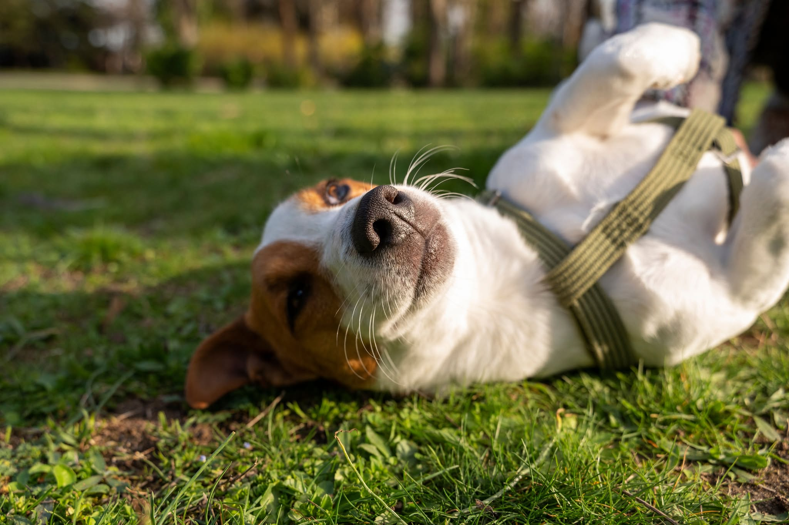
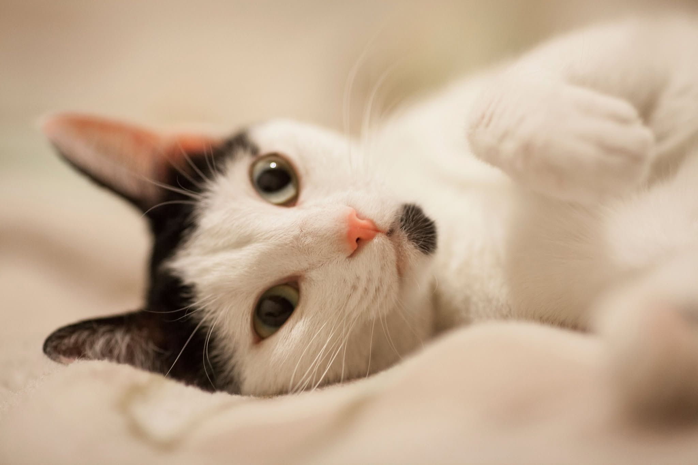

Adopción
Te acompañamos en este proceso
Adoptar es un acto de amor, pero también de compromiso.
En nuestra clínica promovemos la adopción responsable porque creemos que cada animal merece un hogar donde sea cuidado, respetado y querido por toda la vida. Adoptar no es solo llevar una mascota a casa: es integrar un nuevo miembro a la familia.
Por eso, acompañamos a cada adoptante en este proceso, brindando orientación y apoyo para asegurar que la experiencia sea positiva tanto para el animal como para su nueva familia. Nuestro compromiso es ayudar a construir vínculos duraderos, basados en el respeto, la paciencia y el cariño mutuo.
¿Queres encontrar un integrante para tu familia?🐾

📋Requisitos para adoptar
Para adoptar una mascota, es necesario cumplir con los siguientes requisitos:
- ✅Ser mayor de 21 años
- ✅Estar predispuesto para:
- Cargar la solicitud.
- Realizar una entrevista.
- Aceptar visitas de seguimiento.
- ✅Amar a la mascota y poder dedicarle tiempo
- ✅Comprometerse con el cuidado, la salud y la castración de la mascota.
Preguntas frecuentes
¿Qué incluye el proceso de adopción?
Te ofrecemos vacunas al día, desparasitación y chip identificatorio.
¿De donde vienen nuestros amiguitos en adopción?
Nuestros amiguitos provienen de refugios, los cuales se han encargado de darles amor y cuidarlos con dedicación.
¿Es necesario tener visitas de seguimiento?
Sí, es necesario y obligatorio. Es nuestro deber proteger a las mascotas. Adoptarlas es asumir un compromiso de por vida. Son animales que han sufrido situaciones complejas y que a través del cuidado y amor tanto de nuestro equipo como de los rescatistas involucrados logramos reinsertarlos y prepararlos para volver a integrar una familia.
Tenemos que asegurarnos todos que son el Match ideal, que tanto la mascota se adapta a las condiciones de vida de la nueva familia como la familia a las características de las mascotas.
¿Puedo adoptar si vivo en un departamento?
Sí, evaluamos el espacio y tiempo que le dedicarás. Si las condiciones son las correctas, nuestro amigo podria adaptarse sin problema.
